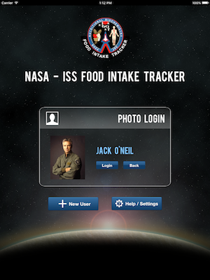

Logging in to the NASA ISS FIT iPad app is as simple as touching your photo on the login screen. You can swipe your finger left or right to scroll through the photos of all registered users and find your photo. Once you find your photo click on it.
Under your photo will be a "Login" button. Click this button and you will be logged in to the application.

Once you have successfully logged into the application, your "Consumption" page will be displayed.
Or you can click on the “Back” button to go back to choose another user to login.